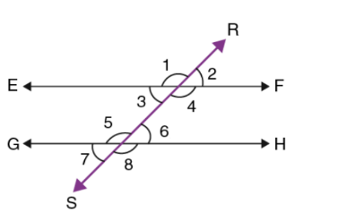

Today we are going to learn about:
A transversal is defined as a line that passes through two lines in the same plane at two distinct points in the geometry. A transversal intersection with two lines produces various types of angles in pairs, such as consecutive interior angles, corresponding angles and alternate angles. A transversal produces 8 angles and this can be observed from the figure given below:
Transversal Line Definition:
A line that intersects two or more lines at distinct points is called a
transversal line.
A transversal line can be obtained by intersecting two or more lines in a
plane that may be parallel or non-parallel.
In the above figure, line “t” is the transversal of two non-parallel lines a and b.
Also, we can draw two transverse lines for two parallel lines and non-perpendicular lines.
Transversal and Parallel Lines:
In the below-given figure, line RS represents the Transversal of Parallel Lines EF and GH.
Transversal Angles
When a transversal cuts two parallel lines, several angles are formed by these two intersections. Those are called transversal angles. Those types of angles on a transversal are given below:
- Corresponding angles
- Alternate Interior Angles
- Alternate Exterior Angles
- Co-interior Angles
From the given diagram, if we try to organise the angles based on the
relative positions they occupy, we get the following categories of angles :
Corresponding Angles
The following pairs of angles are corresponding angles:
- ∠1 and ∠5
- ∠2 and ∠6
- ∠3 and ∠7
- ∠4 and ∠8
Alternate Interior Angles
The following pairs of angles are alternate interior angles:
- ∠3 and ∠6
- ∠4 and ∠5
Alternate Exterior Angles
The following pairs of angles are alternate exterior angles:
- ∠1 and ∠8
- ∠2 and ∠7
Co-interior Angles
The following pairs of angles are co-interior angles:
- ∠3 and ∠5
- ∠4 and ∠6
Transversal Properties
Some of the properties of transversal lines with respect to the parallel lines are listed below.
-
If two parallel lines are cut by a transversal, each pair of corresponding
angles is equal in measure
Here, LM is the transversal made by the parallel lines PQ and RS such that: The pair of corresponding angles that are represented with the same letters are equal. - If two parallel lines are cut by a transversal, each pair of alternate interior angles are equal. Here, ∠A = ∠D and ∠B = ∠C
- If two parallel lines are cut by a transversal, then each pair of interior angles on the same side of the transversal are supplementary, i.e. they add up to 180 degrees. This property can also be written for a single transversal line.  Here, ∠3 + ∠5 = 180° and ∠4 + ∠6 = 180°